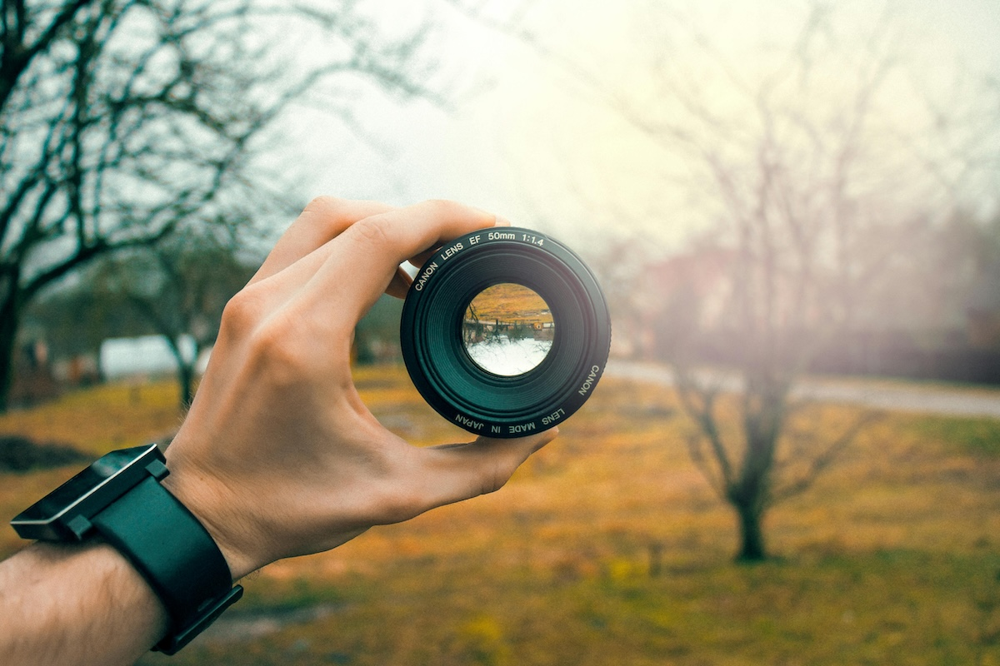

Odak Nedir? Fotoğraf Makinesi Nasıl Odaklanır?
Odaklama, fotoğrafçılıkta bir konunun keskin ve net bir şekilde görünmesini sağlamak için yapılan temel bir işlemdir. Bir fotoğraf makinesinin, sahnedeki belirli bir noktayı en net şekilde yakalayabilmesi, görsel hikaye anlatımında kritik bir rol oynar. Bu yazıda, odaklamanın ne olduğu, fotoğraf makinelerinin nasıl odaklandığı ve odaklama tekniklerinin fotoğrafçılık üzerindeki etkilerini detaylı bir şekilde inceleyeceğiz.
Odak Nedir?
Odak, bir fotoğrafın en net ve keskin görünen kısmını ifade eder. Fotoğrafçılıkta odaklama, ışığın lens aracılığıyla sensöre veya filme doğru bir şekilde yönlendirilmesiyle gerçekleştirilir. Bu, belirli bir mesafedeki nesnelerin net bir şekilde görüntülenmesini sağlar.
Bir fotoğraf karesinde genellikle odaklanmak istediğimiz bir ana konu bulunur. Bu konu, izleyicinin dikkatini çekmek istediğimiz noktadır. Örneğin, bir portrede modelin gözleri veya bir manzara fotoğrafında ufuk çizgisi odak noktası olarak seçilebilir. Ancak odak sadece netliği sağlamakla kalmaz; aynı zamanda fotoğrafın hikayesini oluşturur, derinliğini ve kompozisyonunu şekillendirir.
Odak ve Alan Derinliği İlişkisi
Odaklama, doğrudan alan derinliği ile bağlantılıdır. Alan derinliği, bir fotoğraftaki net olan alanın, odak noktasının önünde ve arkasında ne kadar geniş olduğunu ifade eder. Lensin diyafram açıklığı, odak uzaklığı ve konu ile kamera arasındaki mesafe gibi faktörler alan derinliğini etkiler:
- Sığ Alan Derinliği: Geniş bir diyafram açıklığı (örneğin f/1.8) kullanıldığında, sadece odak noktası net olurken arka plan ve ön plan bulanıklaşır. Bu, portrelerde dikkat çekici bir etki yaratmak için idealdir.
- Geniş Alan Derinliği: Dar bir diyafram açıklığı (örneğin f/16) kullanıldığında, çerçevedeki çoğu alan net olur. Bu, manzara fotoğrafçılığında tercih edilir.
Odaklama Neden Önemlidir?
Odaklama, sadece teknik bir gereklilik değil, aynı zamanda bir fotoğrafçılık sanatıdır. Doğru odaklama, fotoğrafınızın izleyiciye ne anlatmak istediğini belirler. Yanlış bir odaklama ise fotoğrafın tüm etkisini kaybetmesine neden olabilir. İşte odaklamanın fotoğrafa kattıkları:
- Netlik ve Dikkat Çekme: Keskin bir odak, izleyicinin dikkatini fotoğrafın belirli bir noktasına yönlendirir.
- Hikaye Anlatımı: Odak noktası, fotoğrafın hikayesinin merkezini oluşturur. Hangi konunun önemli olduğunu odak belirler.
- Sanatsal Etki: Doğru odaklama ve alan derinliği kombinasyonu, fotoğrafın estetik değerini artırır ve kompozisyonu güçlendirir.
Odaklama Sürecini Etkileyen Faktörler
Odaklama işlemini ve sonucunu etkileyen birkaç önemli faktör vardır:
- Konu ile Kamera Arasındaki Mesafe: Konu ne kadar yakınsa, odaklama o kadar hassas olur. Makro fotoğrafçılıkta bu durum daha belirgin hale gelir.
- Lens Özellikleri: Lensin odak uzaklığı (örneğin 50mm veya 200mm) ve diyafram açıklığı, odaklama kapasitesini etkiler.
- Işık Koşulları: Düşük ışıkta odaklama daha zor olabilir çünkü kamera net bir referans noktası bulmakta zorlanır.
Odaklama Türleri ve Fotoğrafçılık Tarzlarına Etkisi
Odaklama, yalnızca bir teknik değil, aynı zamanda yaratıcılığın bir yansımasıdır. Örneğin:
- Keskin ve Net Odaklama: Belgesel fotoğrafçılıkta veya spor çekimlerinde, anın tüm detaylarıyla yakalanması için gereklidir.
- Yumuşak Odaklama: Romantik bir atmosfer yaratmak için genellikle portre ve sanat fotoğrafçılığında tercih edilir.
- Odak Kaydırma (Focus Shift): Bir fotoğraf serisi oluştururken farklı noktalara odaklanarak her bölgenin net olduğu bir görüntü elde etmek mümkündür (örneğin, ürün fotoğrafçılığı).
Fotoğraf Makinesi Nasıl Odaklanır?
Odaklama işlemi, fotoğraf makinelerinin lens mekanizmaları ve odaklama sistemleriyle gerçekleştirilir. Modern fotoğraf makineleri, odaklama konusunda oldukça gelişmiş sistemlere sahiptir. İşte fotoğraf makinelerinin odaklama mekanizmaları ve işleyişi:
Manuel Odaklama (MF - Manual Focus)
Manuel odaklama, fotoğrafçının lens üzerindeki odaklama halkasını el ile çevirerek netliği ayarladığı yöntemdir. Bu yöntem genellikle şu durumlarda kullanılır:
- Makine otomatik olarak odaklanmakta zorlanıyorsa (örneğin, düşük ışıkta veya karmaşık desenlerde).
- Fotoğrafçı, odak üzerinde tam kontrol sahibi olmak istediğinde (makro çekimler gibi).
Manuel odaklama, zaman alıcı olmasına rağmen, belirli tür çekimlerde (örneğin, yıldız fotoğrafçılığı) vazgeçilmezdir.
Otomatik Odaklama (AF - Autofocus)
Modern fotoğraf makinelerinde bulunan otomatik odaklama, odaklama sürecini hızlı ve kolay hale getirir. Otomatik odaklama sistemleri genellikle üç ana teknolojiye dayanır:
- Kontrast Algılama (Contrast Detection): Kamera, en yüksek kontrastın olduğu noktayı bularak odaklama yapar. Daha çok aynasız fotoğraf makinelerinde kullanılır. Kesin bir yöntem olsa da biraz yavaş olabilir.
- Faz Algılama (Phase Detection): DSLR ve bazı aynasız makinelerde bulunur. Bu yöntem, odaklamayı hızlı ve kesin bir şekilde gerçekleştirir. Özellikle hareketli nesneleri takip etmek için idealdir.
- Hibrit Sistem: Günümüzün modern fotoğraf makineleri, hem kontrast hem de faz algılama sistemlerini birleştirerek hibrit bir odaklama sunar. Bu, hem hız hem de doğruluk sağlar.
Odaklama Modları
Fotoğraf makineleri, farklı çekim senaryolarına uygun çeşitli odaklama modları sunar:
- Tek Nokta Odaklama (Single Point AF): Fotoğrafçı, çerçevedeki tek bir noktayı seçer ve odak bu noktaya yapılır. Portre ve sabit nesneler için idealdir.
- Alan Odaklama (Zone AF): Belirli bir alanı kapsar. Hareketli nesneleri yakalamak için kullanılır.
- Sürekli Odaklama (Continuous AF - AI Servo): Kamera, hareket eden nesneyi takip eder ve sürekli odaklanır. Spor ve aksiyon çekimleri için uygundur.
Odaklama Teknikleri ve İpuçları
Odaklama sadece teknik bir işlem değil, aynı zamanda yaratıcı bir araçtır. İşte odaklamayı etkili bir şekilde kullanmanıza yardımcı olacak bazı ipuçları:
- Ana Konuyu Belirleyin: Fotoğrafınıza bakıldığında hangi kısmın dikkat çekmesini istiyorsanız, odak noktası orası olmalıdır.
- Gözlere Odaklanın: Portre çekimlerinde, izleyicinin duygusal bağ kurmasını sağlamak için gözlere odaklanmak önemlidir.
- Alan Derinliği ile Oynayın: Diyafram açıklığını değiştirerek arka planı bulanıklaştırabilir (geniş açıklık) veya netleştirebilirsiniz (dar açıklık).
- Tripod Kullanın: Özellikle düşük ışık koşullarında, manuel odaklama yaparken kamera sarsıntısını engellemek için tripod kullanın.
- Odak Kilidini Kullanın: Otomatik odaklama yaptıktan sonra odak kilidini etkinleştirerek kompozisyonunuzu yeniden düzenleyebilirsiniz.
Sonuç
Odaklama, fotoğrafçılıkta temel bir beceridir ve her fotoğrafçının bu konuda bilgi sahibi olması gerekir. İster portre çekimi yapıyor olun, ister hızlı bir aksiyon karesini yakalamaya çalışıyor olun, doğru odaklama sayesinde hikayenizi etkili bir şekilde anlatabilirsiniz.
Fotoğraf makinelerinin sunduğu farklı odaklama teknolojilerini anlamak ve bunları yaratıcı bir şekilde kullanmak, daha etkileyici ve anlamlı kareler oluşturmanıza yardımcı olacaktır.